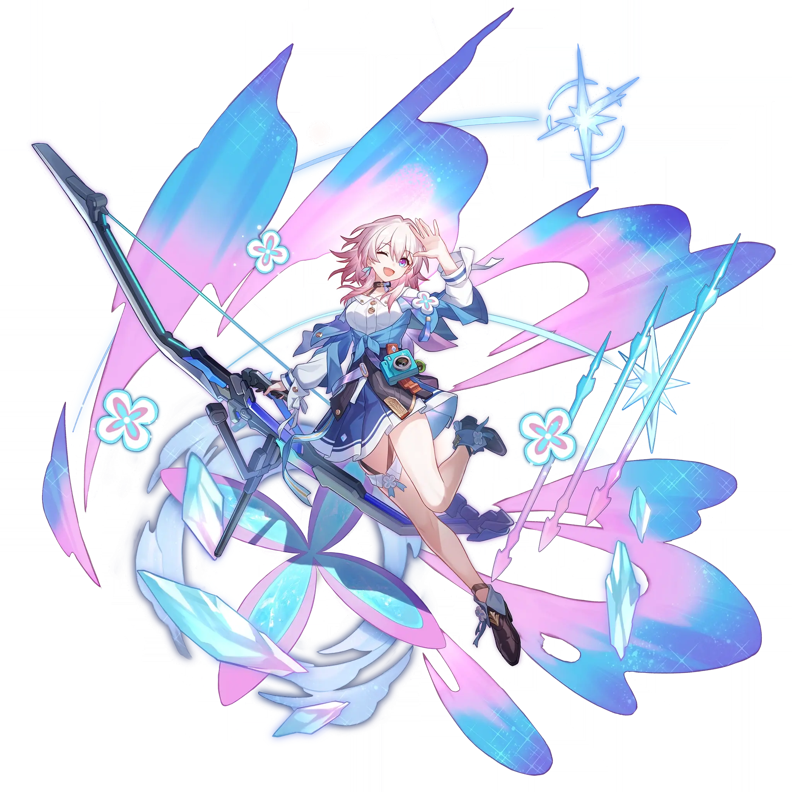

March 7th
Best March 7th build guide for Honkai Star Rail. See March 7th's best Relics, Light Cones, teams, Eidolons, Trace priority, and how to play March 7th.
🔍 Detail Skill
Semua skill aktif dan pasif beserta efeknya.
Deals Ice DMG equal to #1[i]% of March 7th's ATK to a single enemy.
Provides a single ally with a Shield that can absorb DMG equal to #1[i]% of March 7th's DEF plus #4[i] for #2[i] turn(s). If the ally's current HP percentage is #3[i]% or higher, greatly increases the chance of enemies attacking that ally.
After a Shielded ally is attacked by an enemy, March 7th immediately Counters, dealing Ice DMG equal to #1[i]% of her ATK. This effect can be triggered #2[i] time(s) each turn.
⚔ Light Cone Terbaik
Diurutkan dari yang paling kuat. Persentase menunjukkan performa relatif terhadap pilihan terbaik.
💎 Relic Set Terbaik
Set terbaik untuk karakter ini, diurutkan berdasarkan prioritas.
📊 Stat Utama
Stat yang dicari pada tiap slot.
👥 Tim yang Direkomendasikan
Karakter yang sering dipasangkan bersama March 7th.
 Acheron
Acheron
 Aventurine Waveflair
Aventurine Waveflair
 Mortenax Blade
Mortenax Blade
 Yukong
Yukong
🔗 Lanjutkan
Build ini dirangkum dari Prydwen Institute. Starwise tidak menghitung sendiri. Angka bisa berubah setelah patch atau karakter baru rilis.